19. نوشتن برنامههای طولانیتر#
19.1. مروری کلی#
تا کنون، استفاده از Jupyter Notebooks را در نوشتن و اجرای کد Python بررسی کردهایم.
در حالی که آنها هنگام کار با قطعات کوچک کد کارآمد و سازگار هستند، Notebooks بهترین انتخاب برای برنامهها و اسکریپتهای طولانیتر نیستند.
Jupyter Notebooks برای محاسبات تعاملی (یعنی گردش کارهای علم داده) مناسب هستند و میتوانند به اجرای قطعات کد یکی یکی کمک کنند.
فایلهای متنی و اسکریپتها امکان نوشتن و اجرای قطعات بلند کد را به یکباره فراهم میکنند.
ما استفاده از اسکریپتهای Python را به عنوان یک جایگزین بررسی خواهیم کرد.
سپس محیطهای توسعه Jupyter Lab و Visual Studio Code (VS Code) به همراه یک آشنایی مقدماتی با کنترل نسخه (Git) معرفی میشوند.
در این سخنرانی، شما یاد خواهید گرفت که
با اسکریپتهای Python کار کنید
محیطهای توسعه مختلف را راهاندازی کنید
با GitHub شروع کنید
Note
از این به بعد، فرض بر این است که شما یک محیط Anaconda آماده و در حال اجرا دارید.
اگر هنوز این کار را نکردهاید، ممکن است بخواهید یک محیط conda جدید ایجاد کنید.
19.2. کار با فایلهای Python#
فایلهای Python هنگام نوشتن بلوکهای بلند و قابل استفاده مجدد کد استفاده میشوند - طبق قرارداد، آنها پسوند .py دارند.
بیایید با کار با مثال زیر شروع کنیم.
import matplotlib.pyplot as plt
import numpy as np
x = np.linspace(0, 10, 100)
y = np.sin(x)
plt.plot(x, y)
plt.xlabel('x')
plt.ylabel('y')
plt.title('Sine Wave')
plt.show()
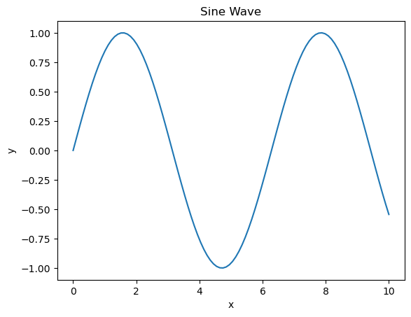
از آنجا که راههای مختلفی برای اجرای کد وجود دارد، ما آنها را در زمینه محیطهای توسعه مختلف بررسی خواهیم کرد.
یکی از مزایای اصلی استفاده از اسکریپتهای Python در این واقعیت نهفته است که میتوانید قابلیتها را از اسکریپتهای دیگر به اسکریپت فعلی یا Jupyter Notebook خود “import” کنید.
بیایید کد قبلی را به یک تابع بازنویسی کنیم و آن را در فایلی به نام sine_wave.py بنویسیم.
%%writefile sine_wave.py
import matplotlib.pyplot as plt
import numpy as np
# Define the plot_wave function.
def plot_wave(title : str = 'Sine Wave'):
x = np.linspace(0, 10, 100)
y = np.sin(x)
plt.plot(x, y)
plt.xlabel('x')
plt.ylabel('y')
plt.title(title)
plt.show()
Writing sine_wave.py
import sine_wave # Import the sine_wave script
# Call the plot_wave function.
sine_wave.plot_wave("Sine Wave - Called from the Second Script")
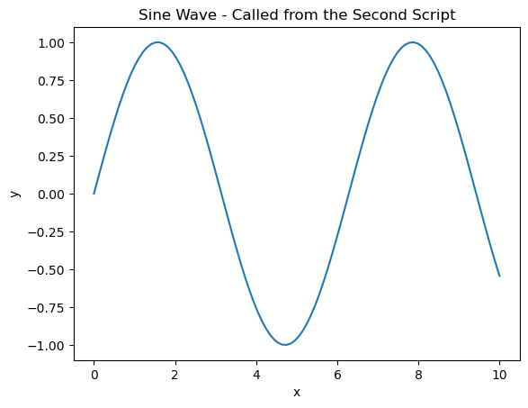
این به شما امکان میدهد کد خود را به قطعات تقسیم کرده و پایگاه کد خود را بهتر ساختار دهید.
برای اطلاعات بیشتر در مورد import کردن قابلیتها، به استفاده از ماژولها و بستهها نگاه کنید.
19.3. محیطهای توسعه#
یک محیط توسعه یک فضای کاری یکپارچه است که در آن میتوانید
کد خود را ویرایش و اجرا کنید
تست و اشکالزدایی کنید
فایلهای پروژه را مدیریت کنید
این سخنرانی شما را با نحوه کار دو محیط توسعه آشنا میکند.
19.4. یک قدم جلوتر از Jupyter Notebooks: JupyterLab#
JupyterLab یک محیط توسعه مبتنی بر مرورگر برای Jupyter Notebooks، اسکریپتهای کد و فایلهای داده است.
اگر میخواهید قبل از نصب محلی آن را آزمایش کنید، میتوانید JupyterLab را در مرورگر امتحان کنید.
میتوانید JupyterLab را با استفاده از pip نصب کنید
> pip install jupyterlab
و آن را در مرورگر، مشابه Jupyter Notebooks، راهاندازی کنید.
> jupyter-lab
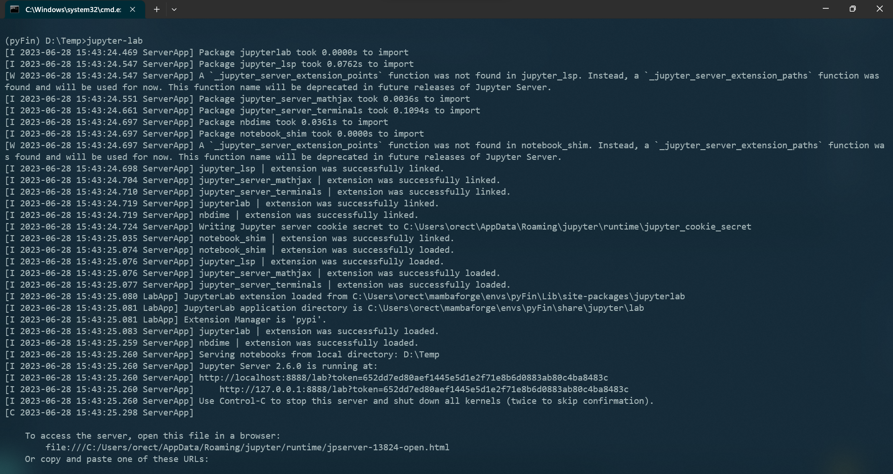
میبینید که Jupyter Server در حال اجرا روی پورت 8888 بر روی localhost است.
رابط کاربری زیر باید به طور خودکار در مرورگر پیشفرض شما باز شود - در غیر این صورت، CTRL + Click روی URL سرور.
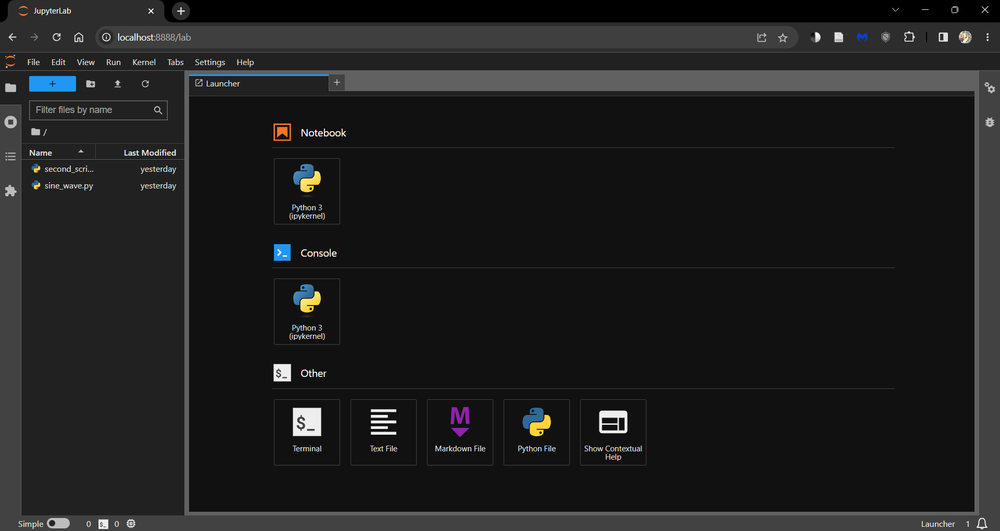
روی موارد زیر کلیک کنید
دکمه Python 3 (ipykernel) در زیر Notebooks برای باز کردن یک Jupyter Notebook جدید
دکمه Python File برای باز کردن یک اسکریپت Python جدید (.py)
همیشه میتوانید این تب راهانداز را با کلیک بر روی دکمه ‘+’ در بالا باز کنید.
تمام فایلها و پوشهها در دایرکتوری کاری شما را میتوان در File Browser (تب سمت چپ) یافت.
میتوانید با استفاده از دکمههای موجود در بالای تب File Browser، فایلها و پوشههای جدید ایجاد کنید.
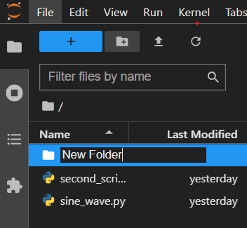
میتوانید با مراجعه به تب Extensions، افزونههایی را نصب کنید که قابلیتهای JupyterLab را افزایش میدهند.
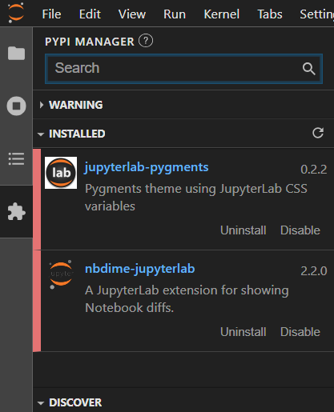
برگشت به اسکریپتهای مثال قبلی، دو راه برای کار با آنها در JupyterLab وجود دارد.
استفاده از دستورات جادویی
استفاده از ترمینال
19.4.1. استفاده از دستورات جادویی#
Jupyter Notebooks و JupyterLab از استفاده از دستورات جادویی پشتیبانی میکنند - دستوراتی که قابلیتهای یک Jupyter Notebook استاندارد را گسترش میدهند.
دستور جادویی %run به شما امکان میدهد یک اسکریپت Python را از درون یک Notebook اجرا کنید.
این یک راه راحت برای اجرای اسکریپتهایی است که در همان دایرکتوری Notebook خود روی آنها کار میکنید و خروجیها را در داخل Notebook ارائه میدهید.
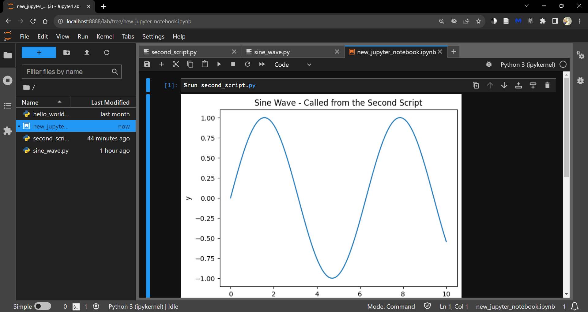
19.4.2. استفاده از ترمینال#
با این حال، اگر فقط به دنبال اجرای فایل .py هستید، گاهی اوقات استفاده از ترمینال آسانتر است.
از راهانداز یک ترمینال باز کنید و دستور زیر را اجرا کنید.
> python <path to file.py>
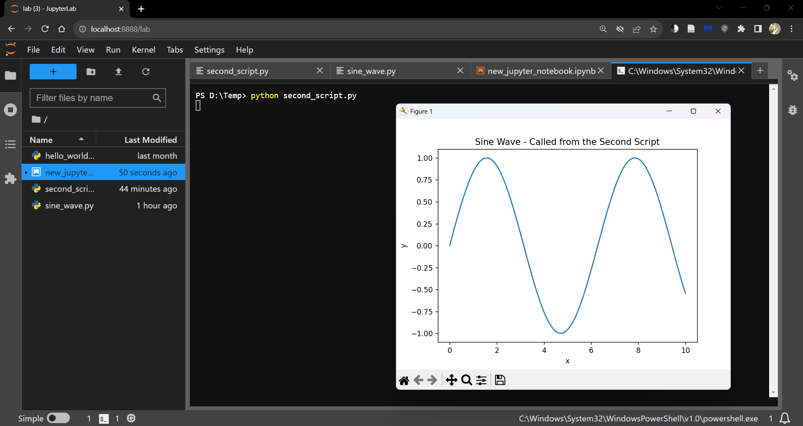
Note
همچنین میتوانید اسکریپت را خط به خط با باز کردن یک کنسول ipykernel اجرا کنید، یا
از راهانداز
یا با کلیک راست در داخل Notebook و انتخاب Create Console for Editor
از Shift + Enter برای اجرای یک خط کد استفاده کنید.
19.5. گشت و گذاری در Visual Studio Code#
Visual Studio Code (VS Code) یک ویرایشگر کد و فضای کاری توسعه است که میتواند
هر دو رابط کاربری یکسان هستند.
وقتی VS Code را راهاندازی میکنید، رابط کاربری زیر را خواهید دید.
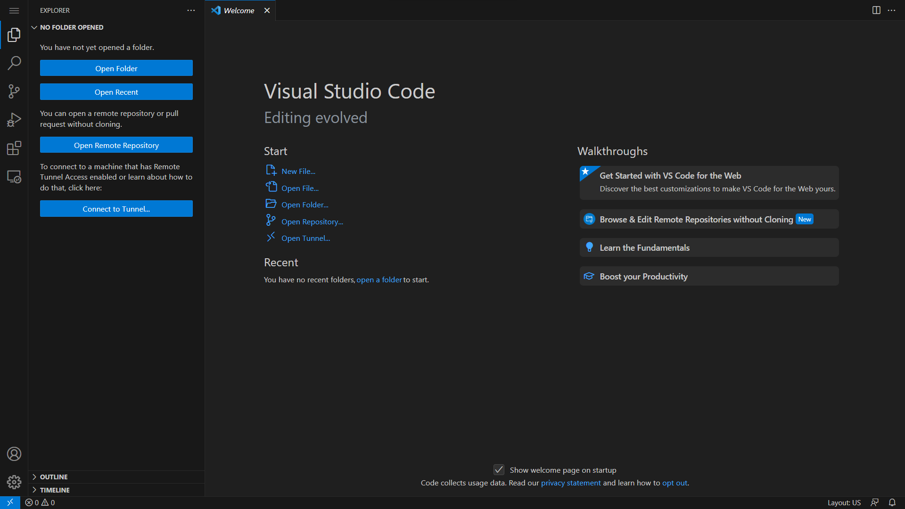
از طریق راهنماهای گام به گام، نحوه سفارشیسازی VS Code به دلخواه خود را کشف کنید.
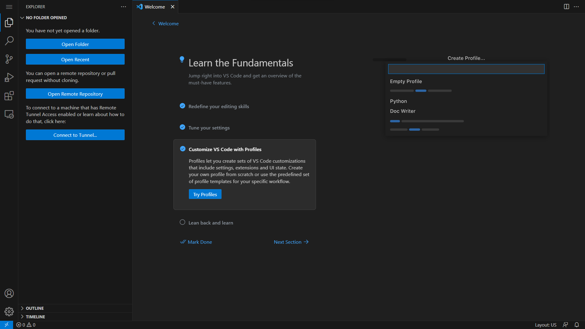
هنگام مواجهه با پیام زیر، ادامه دهید و تمام افزونههای پیشنهادی را نصب کنید.
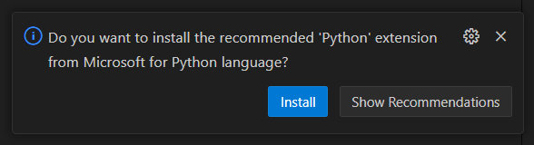
همچنین میتوانید افزونهها را از تب Extensions نصب کنید.
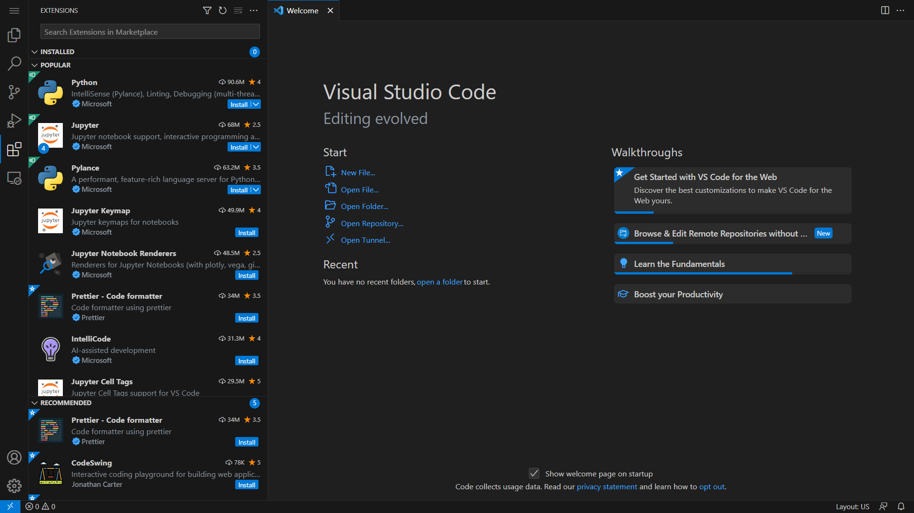
Jupyter Notebooks (فایلهای .ipynb) را میتوان در VS Code کار کرد.
مطمئن شوید که قبل از تلاش برای باز کردن یک Jupyter Notebook، افزونه Jupyter را از تب Extensions نصب کنید.
یک فایل جدید ایجاد کنید (در تب file Explorer) و آن را با پسوند .ipynb ذخیره کنید.
یک kernel/environment برای اجرای Notebook در آن با کلیک بر روی دکمه Select Kernel در گوشه بالا سمت راست ویرایشگر انتخاب کنید.
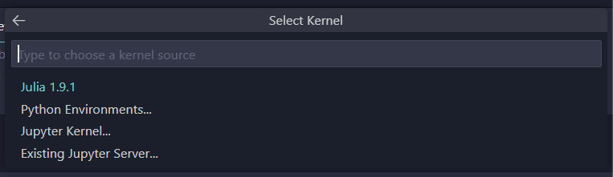
VS Code همچنین از طریق تب Source Control قابلیت کنترل نسخه عالی دارد.
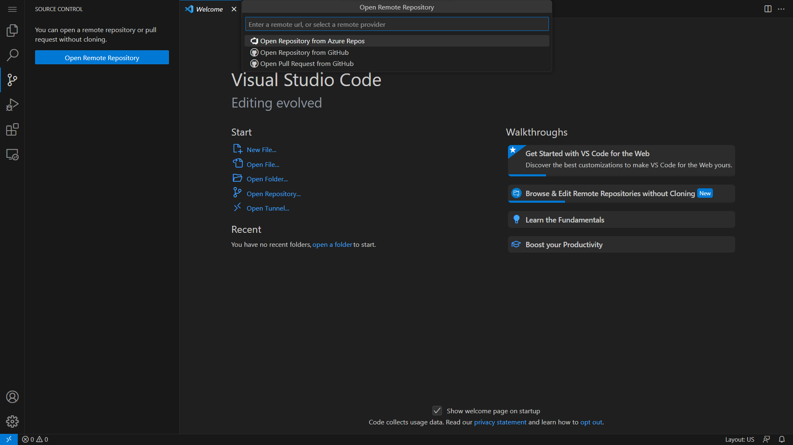
حساب GitHub خود را به VS Code متصل کنید تا تغییرات را به مخازن خود push و pull کنید.
بحثهای بیشتر در مورد کنترل نسخه را میتوان در بخش بعدی یافت.
برای باز کردن یک Terminal جدید در VS Code، روی تب Terminal کلیک کرده و New Terminal را انتخاب کنید.
VS Code یک Terminal جدید در همان دایرکتوری که در آن کار میکنید باز میکند - یک PowerShell در Windows و یک Bash در Linux.
میتوانید shell را تغییر دهید یا یک instance جدید از طریق منوی کشویی در انتهای سمت راست تب ترمینال باز کنید.
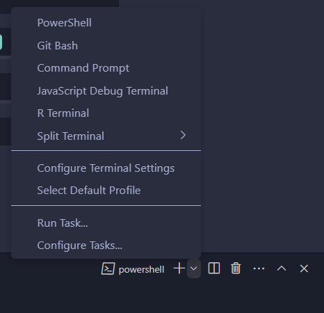
VS Code به شما کمک میکند محیطهای conda را بدون استفاده از خط فرمان مدیریت کنید.
Command Palette را باز کنید (CTRL + SHIFT + P یا از منوی کشویی تحت تب View) و Python: Select Interpreter را جستجو کنید.
این محیطهای موجود را بارگذاری میکند.
همچنین میتوانید با استفاده از Python: Create Environment در Command Palette، محیطهای جدید ایجاد کنید.
یک محیط جدید (پوشه .conda) در دایرکتوری کاری فعلی ایجاد میشود.
در مورد اسکریپتهای مثال قبلی، باز هم دو راه برای کار با آنها در VS Code وجود دارد.
استفاده از دکمه run
استفاده از ترمینال
19.5.1. استفاده از دکمه run#
میتوانید اسکریپت را با کلیک بر روی دکمه run در گوشه بالا سمت راست ویرایشگر اجرا کنید.
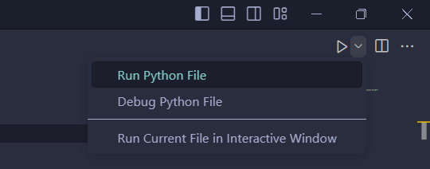
همچنین میتوانید اسکریپت را به صورت تعاملی با انتخاب گزینه Run Current File in Interactive Window از منوی کشویی اجرا کنید.
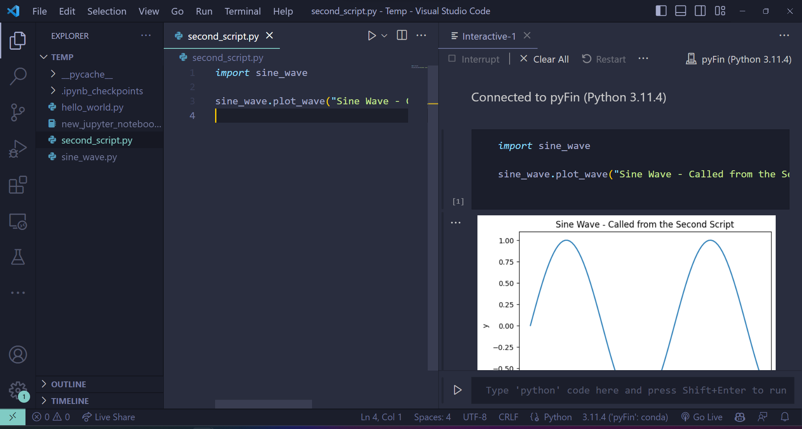
این یک کنسول ipykernel ایجاد میکند و اسکریپت را اجرا میکند.
19.5.2. استفاده از ترمینال#
دستور python <path to file.py> بر روی کنسول انتخابی شما اجرا میشود.
اگر از یک دستگاه Windows استفاده میکنید، میتوانید یا از Anaconda Prompt یا Command Prompt استفاده کنید - اما به طور کلی نه از PowerShell.
در اینجا یک اجرای کد قبلی آمده است.
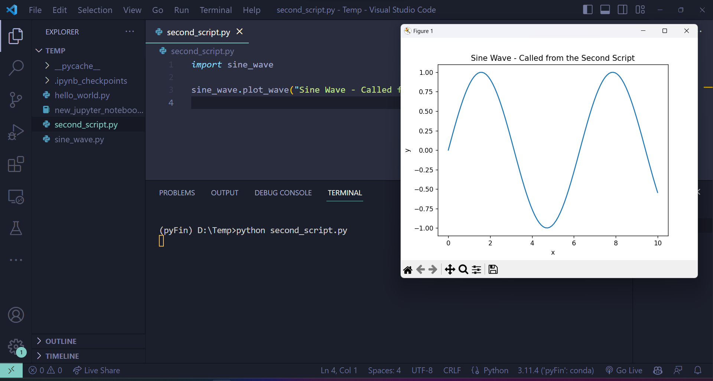
Note
اگر میخواهید بستهها را توسعه دهید و ابزارهایی با استفاده از Python بسازید، ممکن است بخواهید به استفاده از Docker containers و VS Code نگاه کنید.
با این حال، این خارج از تمرکز این سخنرانیها است.
19.6. Git را امتحان کنید#
این بخش شما را با git و GitHub آشنا میکند.
Git یک سیستم کنترل نسخه است — نرمافزاری که برای مدیریت پروژههای دیجیتال مانند کتابخانههای کد استفاده میشود.
در بسیاری از موارد، مجموعههای مرتبط فایلها — که مخازن نامیده میشوند — بر روی GitHub ذخیره میشوند.
GitHub یک دنیای شگفتانگیز از پروژههای کدنویسی مشارکتی است.
به عنوان مثال، میزبان بسیاری از کتابخانههای علمی است که بعداً از آنها استفاده خواهیم کرد، مانند این یکی.
Git نرمافزار زیربنایی است که برای مدیریت این پروژهها استفاده میشود.
Git یک ابزار بسیار قدرتمند برای همکاری توزیع شده است — به عنوان مثال، ما از آن برای به اشتراک گذاشتن و همگامسازی تمام فایلهای منبع این سخنرانیها استفاده میکنیم.
دو نوع اصلی Git وجود دارد
نسخه خط فرمان Git ساده وانیلی
نسخههای مختلف GUI کلیک و اشاره
برای مثال، نسخه GitHub یا Git GUI یکپارچه شده در IDE شما را ببینید.
در صورتی که قبلاً این کار را نکردهاید، امتحان کنید
نصب Git.
دریافت یک کپی از QuantEcon.py با استفاده از Git.
به عنوان مثال، اگر نسخه خط فرمان را نصب کردهاید، یک ترمینال باز کنید و وارد کنید.
git clone https://github.com/QuantEcon/QuantEcon.py
(این فقط git clone در جلوی URL مخزن است)
این دستور تمام اجزای لازم را برای بازسازی سخنرانیای که اکنون میخوانید دانلود میکند.
به عنوان وظیفه دوم،
در GitHub ثبت نام کنید.
به ‘forking’ مخازن GitHub نگاه کنید (forking به معنای ایجاد کپی خود از یک مخزن GitHub است که در GitHub ذخیره میشود).
QuantEcon.py را fork کنید.
fork خود را در یک دایرکتوری محلی clone کنید، ویرایشها انجام دهید، آنها را commit کنید و به مخزن GitHub fork شده خود push کنید.
اگر بهبود ارزشمندی ایجاد کردید، برای ما یک pull request ارسال کنید!
برای خواندن در مورد این موضوعات و سایر موضوعات، امتحان کنید
خواندن مستندات در GitHub.
کتاب Pro Git توسط Scott Chacon و Ben Straub.
یکی از هزاران آموزش Git در اینترنت.